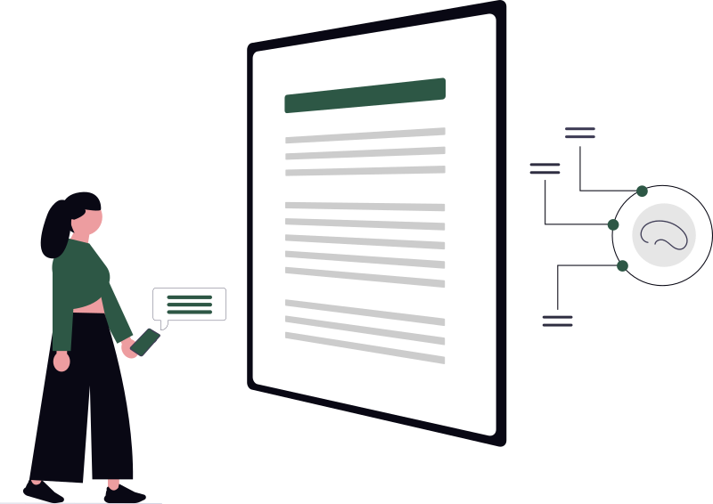

Your loan officer texted a customer’s payoff figure to a colleague last spring. Your CFO forwarded a screenshot of the board packet over iMessage. Your branch manager emailed herself a spreadsheet of delinquent accounts so she could review it at home.
These were all relatively innocuous policy violations. It was just how work gets done on personal phones. And until last week, it was mostly invisible: scattered across message threads and mail apps, findable only by someone who knew exactly where to look.
That invisibility is gone.
Hey Siri

Apple shipped the iOS 27 beta with the rebuilt Siri, and with it a rebuilt Spotlight index. The old index was keyword search. The new one is a semantic vector index: every message, email, photo, calendar entry, and file on the device is processed into numerical representations of meaning, so Siri can answer questions like “find the account details someone sent me in March” without the user remembering a single keyword.
Read that again from a compliance seat. Every piece of business data that ever touched that personal phone, every texted balance, every forwarded document, every screenshot, is now indexed, searchable by meaning, and retrievable by a conversational assistant. The index syncs across the employee’s devices through iCloud. And Apple’s expanded Private Cloud Compute now runs partly on Google Cloud hardware, which means some of that inference happens on infrastructure owned by a second company your bank has no agreement with.
Here is the part that matters most: the vectors carry no access controls. The index does not know that a message contains member PII or a trade secret. It only knows what the content means. Ask Siri to “summarize the financial details in my email from this year” and it does not need to understand that the data is confidential. It just returns the highest-scoring matches. The data itself has no way to say no.
We have seen this movie. It’s called Copilot.
If this feels familiar, it should. It is the same structural failure that hit financial institutions when Microsoft Copilot rolled out across M365.
The chief complaint about default Copilot deployments was never that Copilot leaked data. It was that Copilot faithfully surfaced everything a user technically had permission to see, including the decades of poorly governed SharePoint sites and OneDrive folders that nobody had ever locked down. The salary file that was “hidden” because nobody knew the URL. The M&A folder with inherited permissions from 2019. Copilot did not create that exposure. It ended the era of security by obfuscation, where the control was that finding things was hard.
Copilot was not to blame. The modality failed the financial institution, because it assumes your permissions are correct, and at most institutions they never were.
Siri is a similar failure. Copilot exposed ungoverned data inside your tenant, where you at least had admin tools, audit logs, and a remediation path. Siri indexes ungoverned business data on personal devices, where you have no tenant, no audit log, no admin console, and often no idea the data is there at all. The breach, meaning the leakage of business data onto personal phones, happened years ago. It was tolerable because the data was inert. A semantic index makes it live.
Why “it’s encrypted” is not the answer
Apple’s security story is genuinely strong, and it also does not address the problem. Encryption protects data from someone stealing it. It does nothing about someone simply asking for it.
Prompt injection is the unsolved problem here, and respected security researchers have said so plainly. An assistant with deep access to personal data will answer any query it can match. A malicious app, a crafted web page, or a compromised integration that can push a prompt to Siri can request “every client name mentioned in email this year, ranked by frequency” and the extraction happens inside an authorized, TLS-encrypted API call. No network breach. No broken crypto. A feature, used as designed.
Add the open questions Apple has not answered publicly, including vector deletion policies, whether deleting an email deletes its embedding, what persists in backups, and which queries route to Google infrastructure, and you have a data-handling system your institution cannot inventory, audit, or purge.
The examiner question is coming
Do your employees use AI assistants on devices that handle business data? Have you assessed what those indexes contain?
There are two answers. “We did not know” and “we did not consider it a data-handling system” are both findings. “We classified it as a third-party AI service, restricted indexing on devices that touch business data, and documented the assessment in our model risk register” is a control story. The only difference between those answers is whether you acted before the question was asked.
What to do this quarter
- Put Siri, and AI assistants generally, in your third-party AI inventory now. Treat a semantically indexed phone the way you would treat an unvetted cloud service, because functionally that is what it is.
- Revisit your BYOD policy with fresh eyes. The risk was always the business data on personal phones. The semantic index just raised the stakes. If your mobile policy predates 2026, it was written for a different device.
- Restrict indexing where you can. On managed devices, limit which apps feed Siri and Spotlight. On personal devices you cannot manage, the honest control is reducing what business data reaches them: sanctioned channels for member data, and a clear rule that iMessage and personal mail are not among them.
- Document the decision, whatever it is. Assessing the risk and accepting part of it is defensible. Never having looked is not.
- Brief the board in one sentence: consumer AI assistants now index business data by default, this is intentional product design, and we have assessed and mitigated our exposure.
The takeaway
Copilot taught the industry that an AI assistant is a spotlight pointed at your governance. Siri extends that spotlight past your perimeter, onto devices you do not own, indexing data you never authorized to leave the building in the first place.
The institutions that handle this well will not be the ones that ban the most technology. They will be the ones that can show an examiner they saw the change, assessed it, and made a documented decision while it was still optional to do so.
That window is open right now. It will not stay open long.
Upstate AI helps community banks and credit unions build AI governance that keeps pace with the technology, including third-party AI risk assessments and board-ready policy frameworks. If your BYOD policy has not been reviewed since consumer AI assistants started indexing everything, that review is the conversation to have this quarter. Reach us at up-state-ai.com.